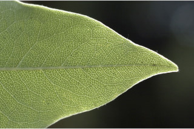
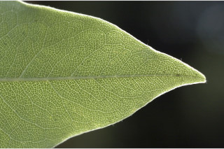

Small trees up to 8 m tall.
8 ಮೀ. ಎತ್ತರದವರೆಗಿನ ಸಣ್ಣ ಗಾತ್ರದ ಮರಗಳು.
Small trees up to 8 m tall.
சிறியமரங்கள் 8 மீ. உயரம் வரை வளரக்கூடியது.
Bark brownish, lenticellate; blaze whitish.
ತೊಗಟೆ ಕಂದು ಬಣ್ಣದಲ್ಲಿದ್ದು ವಾಯುವಿನಿಮಯ ಬೆಂಡು ರಂಧ್ರಗಳ
Bark brownish, lenticellate; blaze whitish.
மரத்தின் பட்டை ப்ரவுன் நிறமானது, பட்டைத்துளைகள் (லெண்டிசெல்லேட்) உடையது; உள்பட்டை வெள்ளை நிறமானது.
Branchlets slender, terete, minutely pubescent.
ಸಮೇತವಿರುತ್ತವೆ; ಕಚ್ಚು ಮಾಡಿದ ಜಾಗ ಬಿಳಿ ಬಣ್ಣದ ಛಾಯೆಯಲ್ಲಿರುತ್ತದೆ.
Branchlets slender, terete, minutely pubescent.
சிறிய நுனிக்கிளைகள் மெல்லியது, குறுக்குவெட்டுத் தோற்றத்தில் வளையமானது, சிறிய உரோமங்களுடையது.
Leaves simple, alternate, spiral, usually crowded at apex; petiole 0.5-1.5 cm long, planoconvex in cross section, pubescent; lamina 7-12.8 x 3-4.3 cm, elliptic to elliptic-oblanceolate, apex acuminate, base cuneate to decurrent, margin entire, pubescent, glabrous when mature, chartaceous, midrib flat above; secondary_nerves ca 8 pairs; tertiary_nerves closely reticulate.
ಕಿರುಕೊಂಬೆಗಳು ತೆಳುವಾಗಿದ್ದು,ದುಂಡಾಗಿರುತ್ತವೆ ಮತ್ತು ಸೂಕ್ಷ್ಮವಾದ
Leaves simple, alternate, spiral, usually crowded at apex; petiole 0.5-1.5 cm long, planoconvex in cross section, pubescent; lamina 7-12.8 x 3-4.3 cm, elliptic to elliptic-oblanceolate, apex acuminate, base cuneate to decurrent, margin entire, pubescent, glabrous when mature, chartaceous, midrib flat above; secondary_nerves ca 8 pairs; tertiary_nerves closely reticulate.
இலைகள் தனித்தவை, மாற்றுஅடுக்கமானவை, சுழல் போல் அமைந்தது, பொரும்பாலும் சிறுகிளைகளின் நுனியில் இலைகள் கூட்டமாக மற்றும் நெருக்கமாக காணப்படும்; இலைக்காம்பு 0.5-1.5 செ.மீ. நீளமானது, இலைக்காம்பு குறுக்குவெட்டுத் தோற்றத்தில் பிளேனோகான்வக்ஸ், உரோமங்களுடையது; இலை அலகு 7-12.8 X 3-4.3 செ.மீ., நீள்வட்ட வடிவானது முதல் நீள்வட்ட-தலைகீழ் ஈட்டி வடிவானது, அலகின் நுனி அதிக்கூரியது, அலகின் தளம் ஆப்பு வடிவானது முதல் டொக்கரண்ட், அலகின் விளிம்பு முழுமையானது, உரோமங்களுடையது, முதிரும் போது உரோமங்களற்றது, சார்ட்டேசியஸ், மையநரம்பு மேற்பரப்பில் அலகின் பரப்பிற்கு சமமானது; இரண்டாம் நிலை நரம்புகள் 8 ஜோடிகள்; மூன்றாம் நிலை நரம்புகள் நெருக்கமான வலைப்பின்னல் போன்றவை.
Inflorescence terminal, umbels of short racemes.
ಮೃದುತುಪ್ಪಳದಿಂದ ಕೂಡಿರುತ್ತದೆ.
Inflorescence terminal, umbels of short racemes.
மஞ்சரி தண்டின் நுனியில் காணப்படும், அம்பல் வகை குட்டையான ரெசீம் மஞ்சரி.
Capsule, loculicidal, 2-valved, 1 cm long, pubescent, drying black; seeds 4, orange to reddish.
ಎಲೆಗಳು ಸರಳವಾಗಿದ್ದು ಪರ್ಯಾಯ ಮತ್ತು ಸುತ್ತು ಜೋಡನಾ ವ್ಯವಸ್ಥೆಯಲ್ಲಿದ್ದು ಸಾಮಾನ್ಯವಾಗಿ ತುದಿಯಲ್ಲಿ ಗುಂಪಾಗಿರುತ್ತವೆ; ಎಲೆತೊಟ್ಟುಗಳು0.5 –1.5 ಸೆಂ.ಮೀ.ವರೆಗಿನ ಉದ್ದವಿದ್ದು, ಅಡ್ಡ ಸೀಳಿದಾಗ ಸಪಾಟ ಪೀನ ಮಧ್ಯದ ಆಕಾರದಲ್ಲಿರುತ್ತವೆ, ಮೃದುತುಪ್ಪಳ ಸಮೇತವಿರುತ್ತವೆ; ಪತ್ರಗಳು7 -12.8 X 3 – 4.3 ಸೆಂ.ಮೀ. ಗಾತ್ರ, ಅಂಡವೃತ್ತದಿಂದ ಅಂಡವೃತ್ತ- ತಲೆಕೆಳಗಾದ ಭರ್ಜಿಯ ಆಕಾರ, ಕ್ರಮೇಣ ಚೂಪಾಗುವ ಮಾದರಿಯ ತುದಿ, ಬೆಣೆಯಾಕಾರದಿಂದ ತಳಭಾಗಕ್ಕೆ ವಿಸ್ತರಿಸಿದ ಮಾದರಿಯ ಬುಡ, ನಯವಾದ ಅಂಚನ್ನು ಹೊಂದಿರುತ್ತವೆ,ಪತ್ರಗಳು ಮೃದುತುಪ್ಪಳದಿಂದ ಕೂಡಿರುತ್ತವೆ,ಬಲಿತಾಗ ರೋಮರಹಿತವಾಗಿರುತ್ತವೆ ಮತ್ತು ಕಾಗದವನ್ನೋಲುವ ಮೇಲ್ಮೈ ಹೊಂದಿರುತ್ತವೆ; ಮಧ್ಯನಾಳ ಮೇಲ್ಭಾಗದಲ್ಲಿ ಚಪ್ಪಟೆಯಾಗಿರುತ್ತವೆ;ಎರಡನೇ ದರ್ಜೆಯ ನಾಳಗಳುಅಂದಾಜು 8 ಜೋಡಿಗಳಿರುತ್ತವೆ; ಮೂರನೇ ದರ್ಜೆಯ ನಾಳಗಳು ಕಡಿಮೆ ಅಂತರ ಹೊಂದಿದ ಜಾಲಬಂಧ ನಾಳ ವಿನ್ಯಾಸದಲ್ಲಿರುತ್ತವೆ.
Capsule, loculicidal, 2-valved, 1 cm long, pubescent, drying black; seeds 4, orange to reddish.
வெடிகனி (கேப்சியூல்), அறைகள் இணையுமிடத்தில் வெடிக்க கூடியது, 2-அறைகளுடையது, 1 செ.மீ. நீளமானது, உரோமங்களுடையது, உலரும் போது கருப்பு நிறமானது; விதைகள் 4, ஆரஞ்ச் முதல் சிவப்பு நிறமானது.

 
